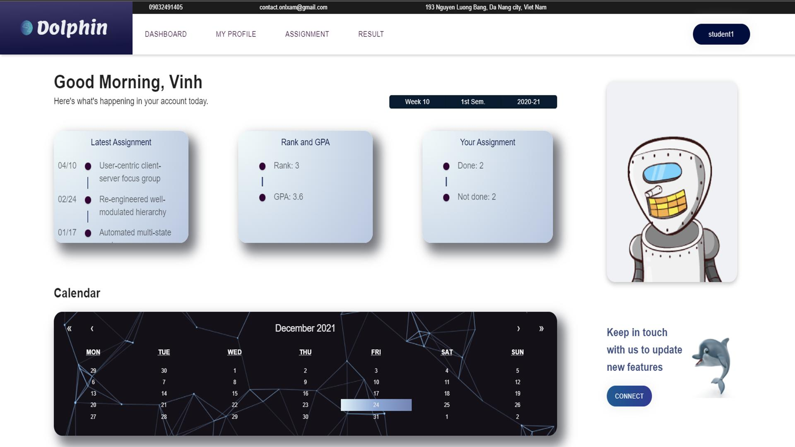
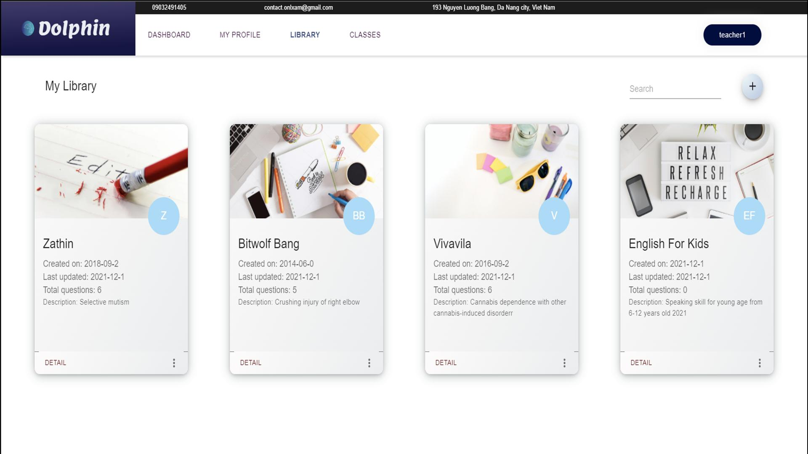
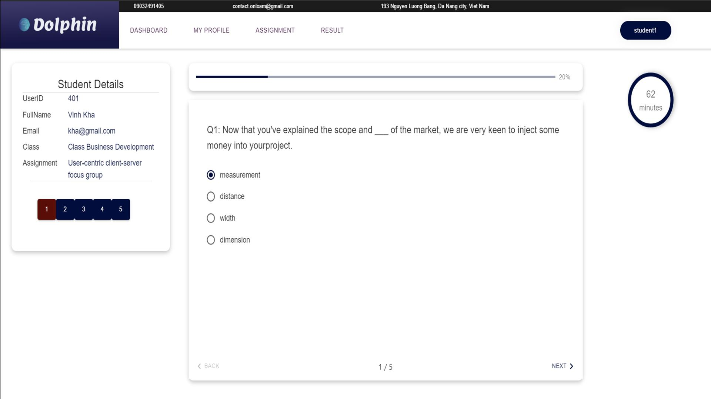
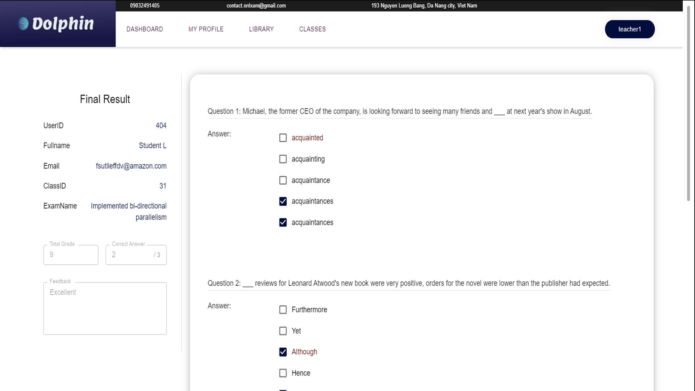
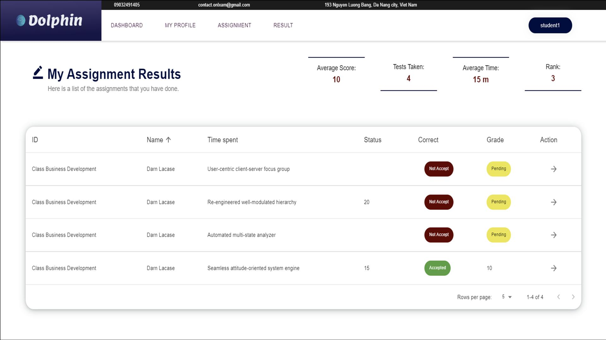
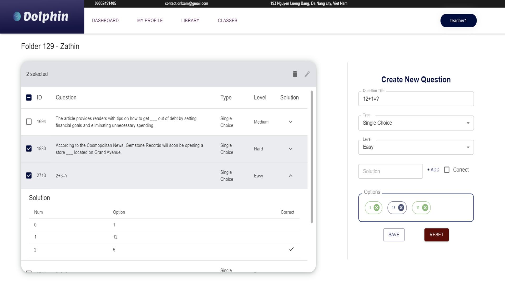
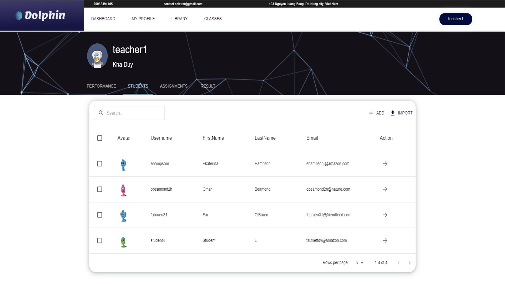
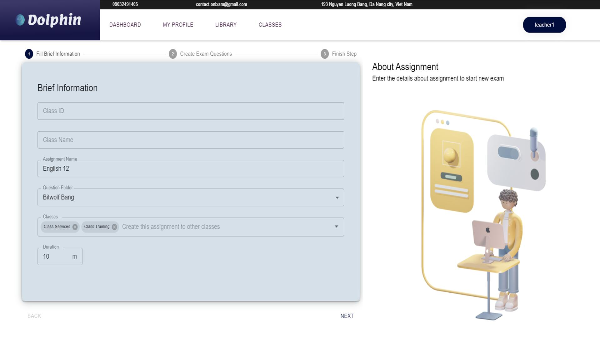
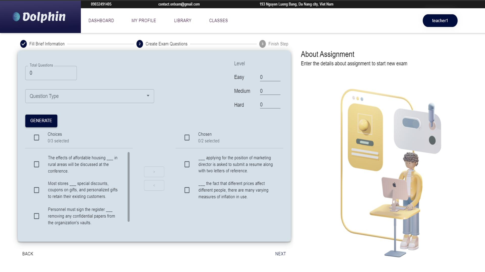
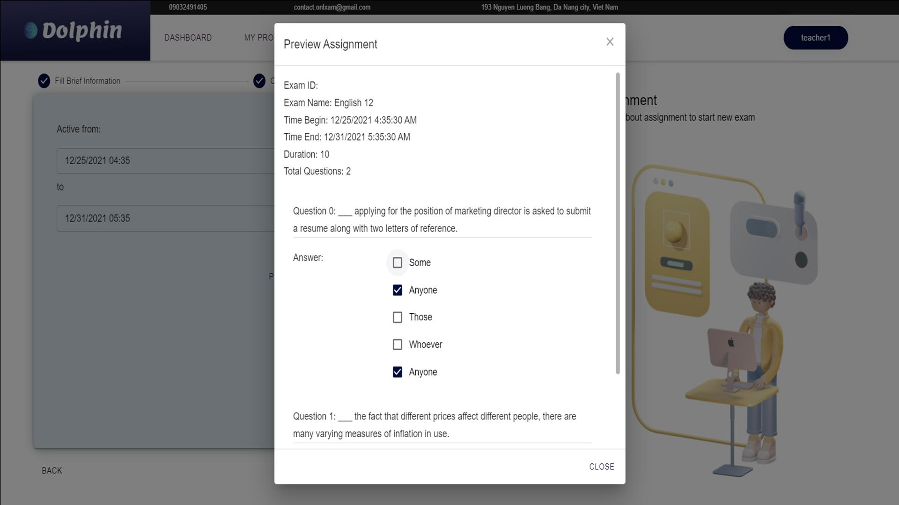

Provided a convenient system for users to conduct assessments of students in universities to mitigate the risk of exam cheating. Deployed the system on the website and mobile (Android). Developed the system using ReactJs, NodeJs, MongoDB, and Micro-service architecture on the server side.

Dolphin App prioritizes the security of student assessments, providing a reliable platform for conducting exams free from the risks of cheating. Innovative features and safeguards ensure the integrity of the evaluation process.

Enjoy the flexibility of Dolphin App across multiple platforms, including both website and mobile (Android). Users can seamlessly access and manage assessments from their preferred devices, enhancing convenience and accessibility.

Built with a cutting-edge technology stack, Dolphin App leverages the power of ReactJs for a dynamic and responsive user interface. The backend is fortified with NodeJs and MongoDB, ensuring scalability, speed, and data integrity.

Dolphin App adopts a micro-service architecture on the server side, enhancing system efficiency, modularity, and ease of maintenance. This architecture allows for the independent development and deployment of services, contributing to a more agile and scalable system.

Dolphin App prioritizes a user-friendly interface, making it intuitive for educators and administrators to navigate and manage assessments effortlessly. The design focuses on a seamless user experience, minimizing the learning curve for users.

Keep a close eye on assessments with real-time monitoring features. Dolphin App provides administrators with insights into ongoing assessments, enabling proactive intervention if needed.

Designed to accommodate varying needs, Dolphin App ensures scalability to handle assessments for different subjects, classes, and institutions. Flexible configurations allow institutions to tailor the system to their unique requirements.

Dolphin App places a strong emphasis on data security and privacy, implementing robust measures to protect sensitive student information. Encryption protocols and secure authentication mechanisms safeguard the integrity of user data.
